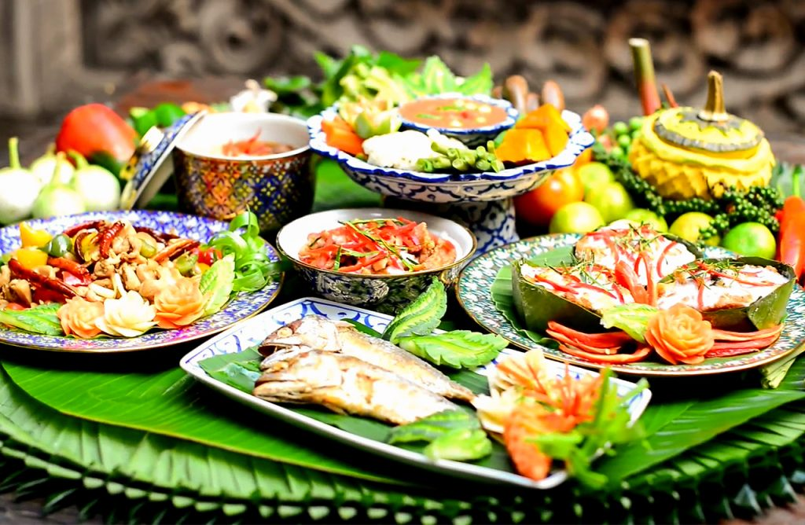
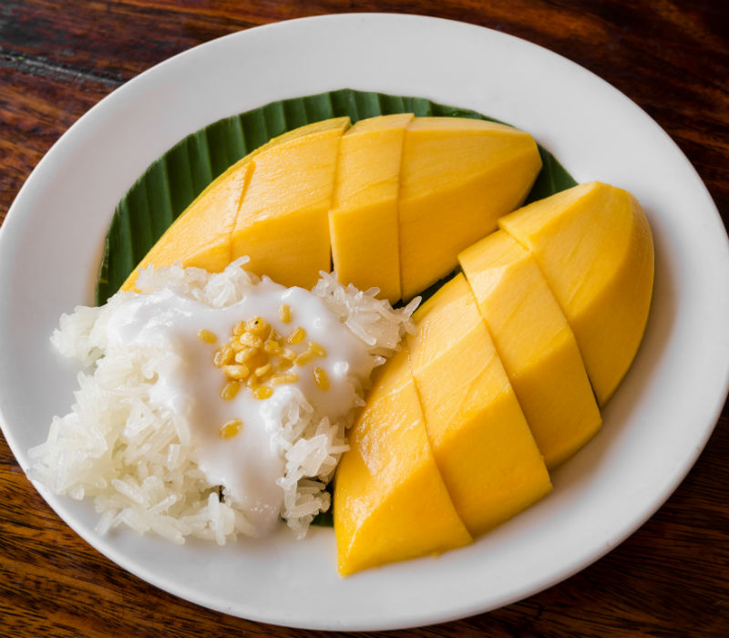
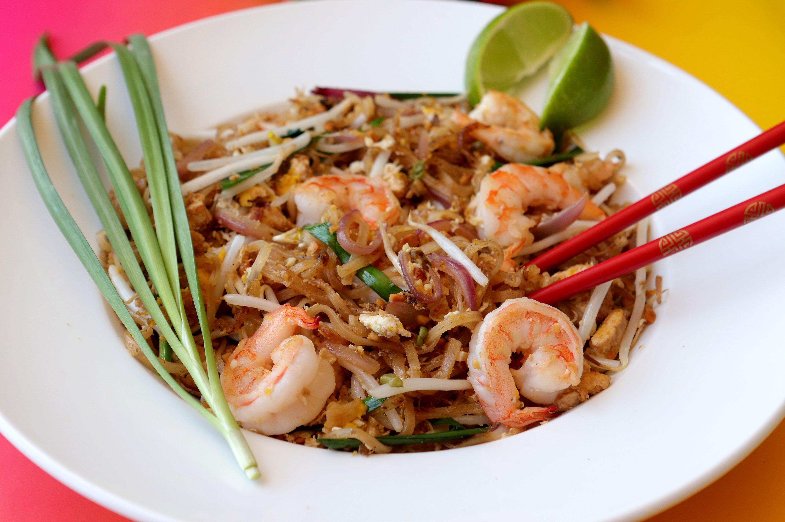
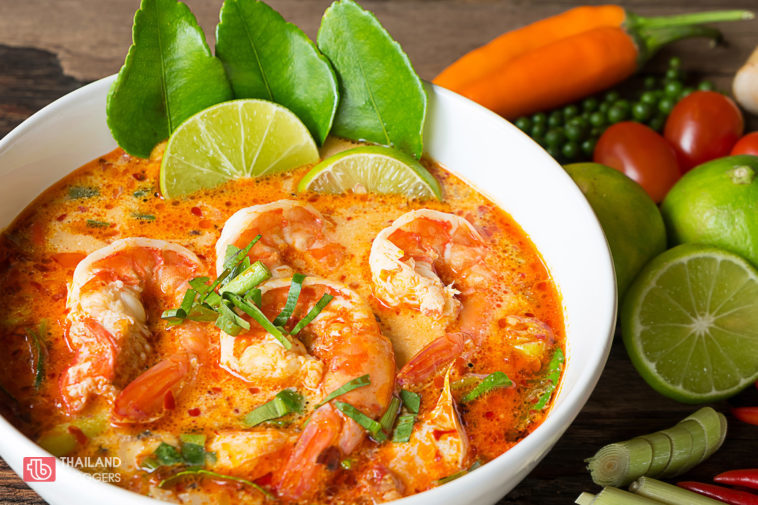

Thailand
Climate
Thailand is divided into three seasons. The first is the rainy or southwest monsoon season (mid–May to mid–October), which is caused by southwestern wind from Indian Ocean. Rainfall is also contributed by Intertropical Convergence Zone (ITCZ) and tropical cyclones. August and September being the wettest period of the year. The country receives a mean annual rainfall of 1,200 to 1,600 mm (47 to 63 in). Winter or the northeast monsoon starts from mid–October until mid–February. Most of Thailand experiences dry weather with mild temperatures.,4 Summer or the pre–monsoon season runs from mid–February until mid–May. Due to its inland nature and latitude, the north, northeast, central and eastern parts of Thailand experience a long period of warm weather, where temperatures can reach up to 40 °C (104 °F) during March to May, in contrast to close to or below 0 °C (32 °F) in some areas in winter. Southern Thailand is characterised by mild weather year-round with less diurnal and seasonal variations in temperatures due to maritime influences. It receives abundant rainfall, particularly during October to November.
Thailand is among the world's ten countries that are most exposed to climate change; in particular, it is highly vulnerable to rising sea levels and extreme weather events.
Food
Thai cuisine is one of the most popular in the world. Thai food blends five fundamental tastes: sweet, spicy, sour, bitter, and salty. The herbs and spices most used in Thai cooking themselves have medicinal qualities such as garlic, lemongrass, Kaffir lime, galangal, turmeric, coriander, coconut milk.Each region of Thailand has its specialities: kaeng khiao wan (green curry) in the central region, som tam (green papaya salad) in the northeast, khao soi in the north, Massaman curry in the south.
In 2017, seven Thai dishes appeared on a list of the "World's 50 Best Foods"— an online poll of worldwide by CNN Travel. Thailand had more dishes on the list than any other country. They were: tom yam goong (4th), pad Thai (5th), som tam (6th), Massaman curry (10th), green curry (19th), Thai fried rice (24th) and mu nam tok (36th).
The staple food in Thailand is rice, particularly jasmine rice (also known as hom Mali) which forms part of almost every meal. Thailand is a leading exporter of rice, and Thais consume over 100 kg of milled rice per person per year.

Tourist Spot
Ayuthaya Historical ParkAo NangFloating Markets near Bangkok